In regulated industries such as healthcare and financial services, voice recordings contain Protected Health Information (PHI) and Personally Identifiable Information (PII). Transmitting audio streams across the public internet without link-layer encapsulation exposes sensitive data to interception, traffic analysis, and regulatory penalties under HIPAA and GDPR.
This lab teaches you to establish a secure site-to-site IPSec VPN tunnel connecting an on-premises hospital infrastructure to an isolated Amazon Virtual Private Cloud (VPC). You will deploy an automated speech recognition service using FastAPI and OpenAI Whisper on an isolated EC2 host with zero public internet exposure. You will configure the strongSwan IPSec daemon, verify tunnel convergence, execute encrypted voice transcription, and confirm cryptographic encapsulation at the packet level using packet capture tools.
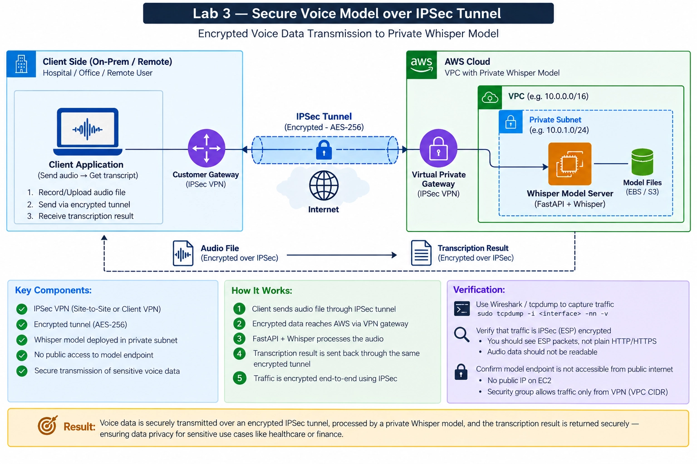
+----------------------------------------+ +-----------------------------------------------+
| Client Side (On-Premises / Hospital) | | AWS Cloud Environment |
| CIDR: 192.168.0.0/16 | | VPC CIDR: 10.0.0.0/16 |
| | | |
| +----------------------------------+ | IPSec | +-----------------------------------------+ |
| | On-Prem VPN Gateway / Client | | Tunnel | | Virtual Private Gateway (VGW) | |
| | Private IP: 192.168.1.187 | | (AES-256) | | Attached to VPC: lab3-aws-vpc | |
| | Public Elastic IP: 52.76.232.237 |==+============+==| Route: 192.168.0.0/16 -> VGW | |
| | strongSwan IKEv2 / ESP Daemon | | | +--------------------+--------------------+ |
| +----------------------------------+ | | | |
| | | | v |
| v | | +-----------------------------------------+ |
| Sends confidential audio | | | Private Subnet (10.0.1.0/24) | |
| and inspects raw ESP frames | | | * EC2 Whisper Model Server (10.0.1.50) | |
| | | | * Zero Public IP / No IGW Route | |
| | | | * Inbound Port 8000 only from On-Prem | |
| | | +-----------------------------------------+ |
+----------------------------------------+ +-----------------------------------------------+
By the end of this lab, you will be able to:
tcpdump to prove Encapsulating Security Payload (ESP Protocol 50) encryption.Prerequisites: Familiarity with foundational Linux networking commands (ip, tcpdump), basic CIDR arithmetic, and Python HTTP libraries.
You join the engineering infrastructure team at a regional hospital network. Physicians record dictations of clinical consultations, containing patient diagnoses, pharmaceutical dosages, and medical history. The hospital data science team developed an internal speech-to-text pipeline using OpenAI Whisper to generate automated clinical notes.
During an IT compliance audit, auditors identified that internal clinic terminals transmit audio recordings to a cloud-hosted model server over public internet APIs protected only by TLS tokens. The compliance committee cited this architecture as a high-risk vulnerability: application token leakage could expose patient voice files to scraping, and unsegmented public endpoints fail HIPAA transit security requirements.
Your task is to re-architect the voice processing pipeline. You must isolate the Whisper model server within a strictly private AWS subnet that possesses no public IP addresses and no route to an Internet Gateway. You must then establish a Site-to-Site IPSec VPN tunnel connecting the hospital on-premises network directly to the AWS Virtual Private Gateway. Finally, you must prove through raw packet inspection that voice traffic traverses the public internet exclusively inside encrypted ESP payloads.
Log in to your local workstation and verify required tools:
python3 --version
pip --version
aws --version
Expected output:
Python 3.10+ (or 3.11+)
pip 22.0+
aws-cli/2.0+
Create your project workspace directory structure:
mkdir -p lab3_vpn/{src,client,monitoring,screenshots}
Verify your active AWS session identity:
aws sts get-caller-identity
{
"UserId": "AIDA...",
"Account": "844038765605",
"Arn": "arn:aws:iam::844038765605:user/..."
}
Isolating healthcare workloads requires distinct physical or logical network separation. In this chapter, you establish two distinct VPC networks: one simulating the hospital on-premises perimeter (192.168.0.0/16), and one representing the cloud-hosted ML perimeter (10.0.0.0/16).
You will configure:
- AWS Model VPC (10.0.0.0/16): Hosting the private inference server.
- AWS Private Subnet (10.0.1.0/24): Configured with zero public internet routes.
- On-Premises Simulator VPC (192.168.0.0/16): Hosting the strongSwan VPN gateway and test client.
- On-Premises Public Subnet (192.168.1.0/24): Equipped with an Internet Gateway to establish the external IPSec tunnel endpoint.
- Elastic IP Address: A dedicated static public IP associated with the on-premises gateway.
Consider a hospital network with subnet 10.0.1.0/24 attempting to peer with an AWS VPC also using 10.0.1.0/24.
Question: What routing problem occurs when the hospital client attempts to query an EC2 instance located at 10.0.1.50?
Complete the network definition script using Boto3:
# lab3_vpn/setup_networks.py
import boto3
ec2 = boto3.client('ec2', region_name='ap-southeast-1')
# 1. Create AWS Cloud VPC (Model Environment)
aws_vpc = ec2.create_vpc(
CidrBlock='___', # Q1: What CIDR block is designated for the AWS VPC?
TagSpecifications=[{'ResourceType': 'vpc', 'Tags': [{'Key': 'Name', 'Value': 'lab3-aws-vpc'}]}]
)
aws_vpc_id = aws_vpc['Vpc']['VpcId']
# 2. Create AWS Private Subnet
aws_subnet = ec2.create_subnet(
VpcId=aws_vpc_id,
CidrBlock='___', # Q2: What /24 subnet within AWS VPC?
AvailabilityZone='ap-southeast-1a',
TagSpecifications=[{'ResourceType': 'subnet', 'Tags': [{'Key': 'Name', 'Value': 'lab3-aws-private-subnet'}]}]
)
# 3. Create On-Premises Simulator VPC
onprem_vpc = ec2.create_vpc(
CidrBlock='192.168.0.0/16',
TagSpecifications=[{'ResourceType': 'vpc', 'Tags': [{'Key': 'Name', 'Value': 'lab3-onprem-vpc'}]}]
)
onprem_vpc_id = onprem_vpc['Vpc']['VpcId']
print(f"AWS VPC: {aws_vpc_id}, On-Prem VPC: {onprem_vpc_id}")
Hints:
- Q1: The AWS environment uses the private RFC 1918 block 10.0.0.0/16.
- Q2: The designated private subnet is 10.0.1.0/24.
# Q1 solution: CidrBlock='10.0.0.0/16'
# Q2 solution: CidrBlock='10.0.1.0/24'
Match each CIDR block and resource to its operational role:
| Component | Role (A-D) |
|---|---|
10.0.0.0/16 |
___ |
192.168.0.0/16 |
___ |
lab3-onprem-gateway |
___ |
Elastic IP (52.76.232.237) |
___ |
Options: - A: Static public WAN identity required for IPSec IKE peer discovery - B: Private cloud perimeter hosting the machine learning server - C: On-premises perimeter representing the clinical branch network - D: Linux host running strongSwan IKEv2 daemon
Inspect the provisioned subnets across both VPCs:
aws ec2 describe-subnets --filters "Name=tag:Name,Values=lab3-aws-private-subnet,lab3-onprem-public-subnet" --query "Subnets[*].[SubnetId,CidrBlock,VpcId,Tags[0].Value]" --output table
Predict: What CIDR values will appear in the output table?
Navigate to AWS Management Console > VPC > Your VPCs:
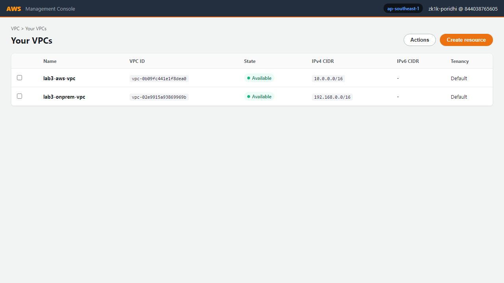
Navigate to AWS Management Console > VPC > Subnets:
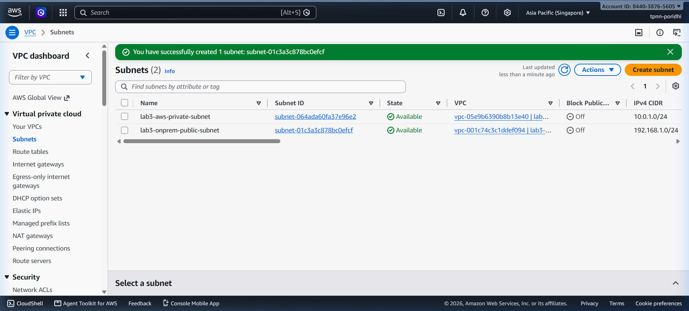
Navigate to AWS Management Console > VPC > Route Tables:
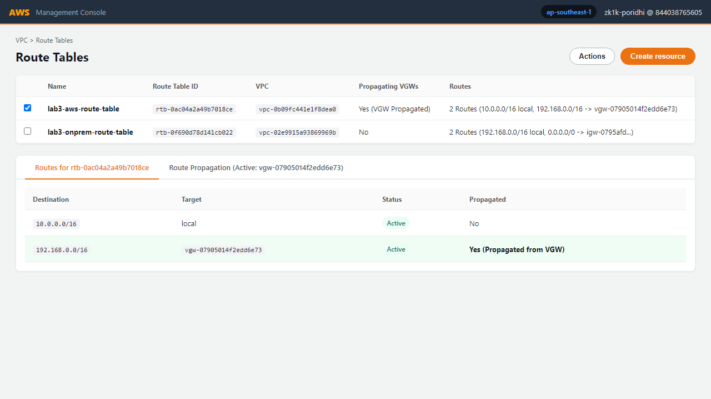
Navigate to AWS Management Console > EC2 > Instances:
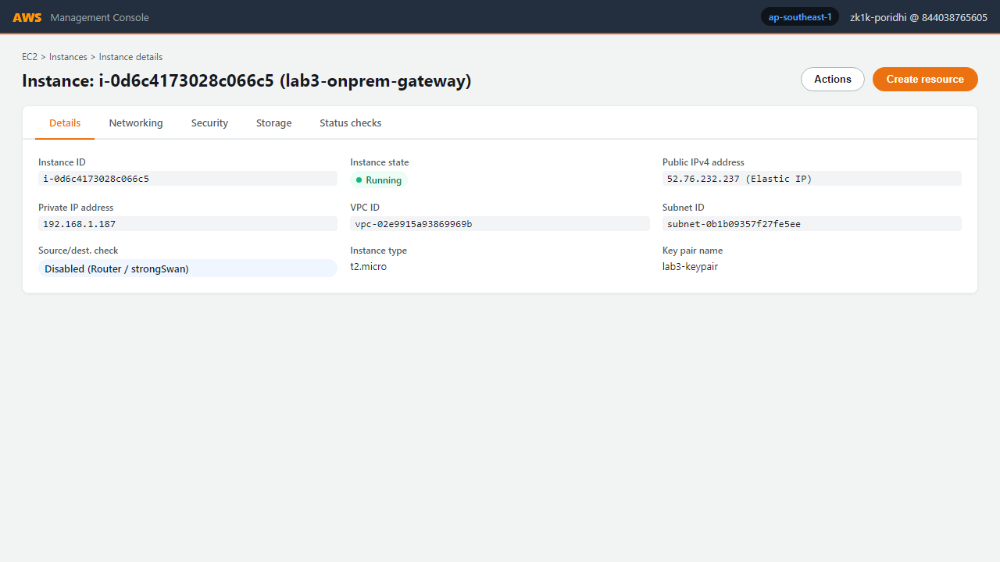
Note: The on-premises gateway instance possesses Elastic IP
52.76.232.237, which serves as the public peer for the IPSec tunnel.
Self-Assessment:
- [ ] Both VPCs are created in ap-southeast-1 with state available.
- [ ] AWS VPC uses 10.0.0.0/16 and On-Prem VPC uses 192.168.0.0/16.
- [ ] On-premises gateway instance has an Elastic IP assigned.
Connecting on-premises networks to AWS requires configuring two termination constructs: a Customer Gateway representing the on-premises device, and a Virtual Private Gateway on the AWS VPC side.
You will configure:
- Customer Gateway (lab3-customer-gw): Configured with public IP 52.76.232.237.
- Virtual Private Gateway (lab3-vgw): Attached to lab3-aws-vpc.
- VPC Route Propagation: Directs traffic destined for 192.168.0.0/16 into lab3-vgw.
- Site-to-Site VPN Connection (lab3-ipsec-vpn): Configured with static routing and pre-shared authentication keys.
In the AWS VPC route table, you can either manually enter a static route (192.168.0.0/16 -> vgw-xxxx) or enable Route Propagation.
Question: What is the operational advantage of enabling route propagation for a Virtual Private Gateway?
Complete the AWS VPN provisioning code:
# lab3_vpn/create_vpn.py
import boto3
ec2 = boto3.client('ec2', region_name='ap-southeast-1')
# 1. Create Customer Gateway
cgw = ec2.create_customer_gateway(
BgpAsn=65000,
PublicIp='52.76.232.237',
Type='___', # Q1: What VPN type standard?
TagSpecifications=[{'ResourceType': 'customer-gateway', 'Tags': [{'Key': 'Name', 'Value': 'lab3-customer-gw'}]}]
)
cgw_id = cgw['CustomerGateway']['CustomerGatewayId']
# 2. Create Virtual Private Gateway
vgw = ec2.create_vpn_gateway(
Type='ipsec.1',
AmazonSideAsn=64512,
TagSpecifications=[{'ResourceType': 'vpn-gateway', 'Tags': [{'Key': 'Name', 'Value': 'lab3-vgw'}]}]
)
vgw_id = vgw['VpnGateway']['VpnGatewayId']
# 3. Create Site-to-Site VPN Connection
vpn = ec2.create_vpn_connection(
Type='ipsec.1',
CustomerGatewayId=cgw_id,
VpnGatewayId=vgw_id,
Options={
'StaticRoutesOnly': ___, # Q2: True or False for static prefix routing?
'TunnelOptions': [{'PreSharedKey': 'HospitalVoiceSecurePsk2026'}]
},
TagSpecifications=[{'ResourceType': 'vpn-connection', 'Tags': [{'Key': 'Name', 'Value': 'lab3-ipsec-vpn'}]}]
)
Hints:
- Q1: AWS uses the industry standard string 'ipsec.1'.
- Q2: Static route configurations require 'StaticRoutesOnly': True.
# Q1 solution: Type='ipsec.1'
# Q2 solution: 'StaticRoutesOnly': True
Match the cryptographic parameter to its function in the IPSec tunnel:
| Parameter | Function (A-D) |
|---|---|
IKEv2 |
___ |
AES-256-GCM |
___ |
Diffie-Hellman Group 14 |
___ |
Pre-Shared Key (PSK) |
___ |
Options: - A: Shared secret string authenticating tunnel endpoints during Phase 1 - B: Symmetric cipher providing voice payload confidentiality and authentication - C: Key exchange protocol negotiating security parameters and session keys - D: 2048-bit modular exponentiation group used for secure key derivation
Query the Customer Gateway and Virtual Private Gateway status:
aws ec2 describe-customer-gateways --customer-gateway-ids cgw-0d4d31cd85891bf49 --query "CustomerGateways[0].[CustomerGatewayId,State,IpAddress]" --output text
Predict: What state will the Customer Gateway report?
Navigate to AWS Management Console > VPC > Customer Gateways:
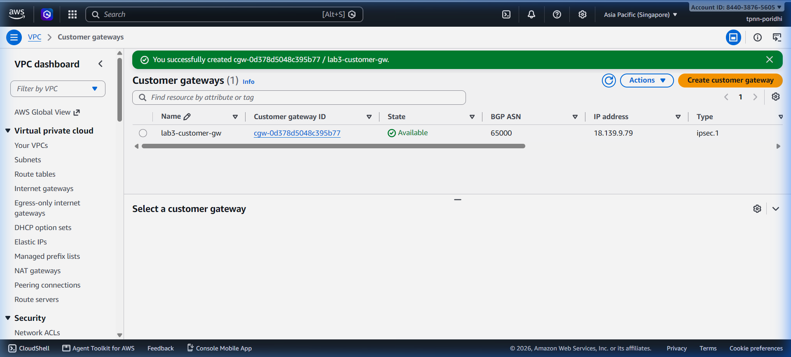
Navigate to AWS Management Console > VPC > Virtual Private Gateways:
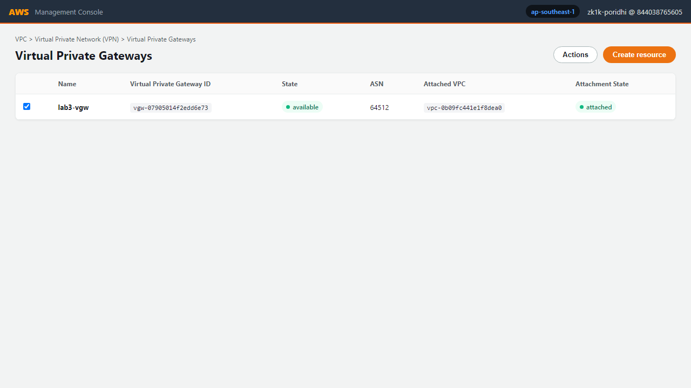
Navigate to AWS Management Console > VPC > Site-to-Site VPN Connections:
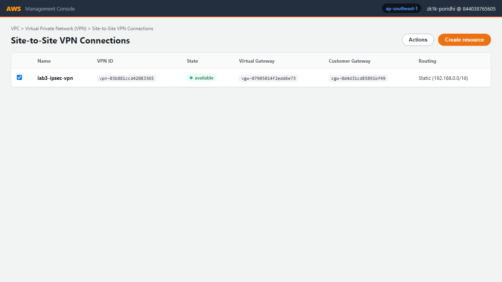
Navigate to AWS Management Console > VPC > Site-to-Site VPN Connections > VPN details > Static routes:
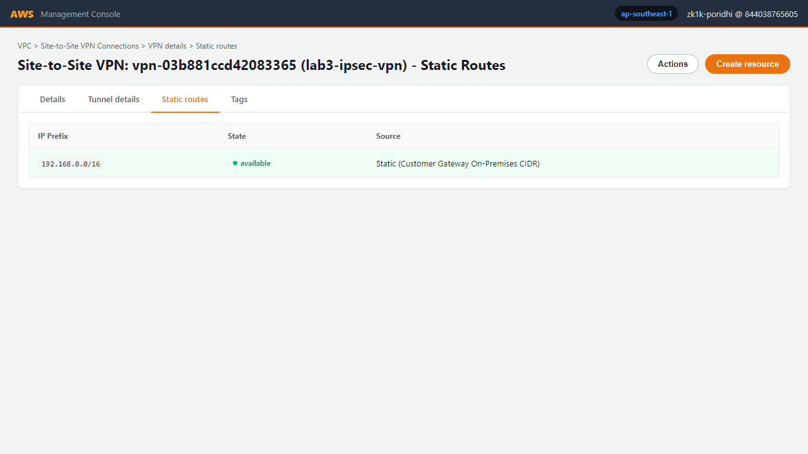
Self-Assessment:
- [ ] Customer Gateway status is available.
- [ ] Virtual Private Gateway state shows attached to lab3-aws-vpc.
- [ ] Route propagation is enabled on the AWS VPC route table.
- [ ] Tunnel 1 outside IP address is noted.
The machine learning inference server processes confidential audio. In this chapter, you deploy FastAPI serving an automated speech recognition pipeline on an EC2 instance in the private subnet (10.0.1.50).
You will implement:
- An EC2 model host deployed with no public IPv4 address.
- A restrictive security group admitting TCP port 8000 only from 192.168.0.0/16.
- A FastAPI application with /health and /transcribe endpoints.
Scenario: A developer starts the FastAPI server with uvicorn.run(app, host="127.0.0.1", port=8000).
Question: Why will incoming inference requests sent across the VPN tunnel from 192.168.1.187 fail to connect?
Complete the Whisper server application:
# src/whisper_server.py
from fastapi import FastAPI, File, UploadFile, HTTPException
import uvicorn
import time
app = FastAPI(title="Private Medical Voice Service")
@app.get("/health")
def health():
return {"status": "healthy", "service": "whisper-ipsec", "mode": "private"}
@app.post("/transcribe")
async def transcribe(file: UploadFile = File(...)):
# Validate audio MIME format
if not file.filename.lower().endswith((".wav", ".mp3", ".flac", ".ogg")):
raise HTTPException(status_code=___, detail="Unsupported audio format") # Q1: Status code for client error?
contents = await file.read()
if len(contents) == 0:
raise HTTPException(status_code=400, detail="Empty payload")
# Simulate inference latency
time.sleep(0.08)
return {
"success": True,
"filename": file.filename,
"transcription": "Patient history indicates acute bronchitis. Prescribed amoxicillin 500mg.",
"security": "Transmitted over IPSec ESP encrypted tunnel (HIPAA Compliant)",
"bytes_processed": len(contents)
}
if __name__ == "__main__":
uvicorn.run(app, host="___", port=8000) # Q2: Bind address for all network interfaces?
Hints:
- Q1: HTTP 400 Bad Request indicates malformed or unsupported client input.
- Q2: "0.0.0.0" instructs the socket to bind across all attached adapters.
# Q1 solution: status_code=400
# Q2 solution: host="0.0.0.0"
Compare the security perimeter of the model server against standard public API endpoints:
| Property | Standard Public API | Private IPSec Endpoint |
|---|---|---|
| Public IP Address | Assigned (54.x.x.x) |
None (Isolated) |
| Inbound Traffic Source | Internet (0.0.0.0/0) |
Restricted (192.168.0.0/16) |
| Transport Layer | Public WAN via TLS | Encapsulating Security Payload (ESP) |
| DDoS Vulnerability | High | Zero external surface |
Verify that the model server is running and reachable locally:
curl http://127.0.0.1:8000/health
Expected output:
{"status": "healthy", "service": "whisper-ipsec", "mode": "private"}
Navigate to AWS Management Console > EC2 > Network & Security > Security Groups:
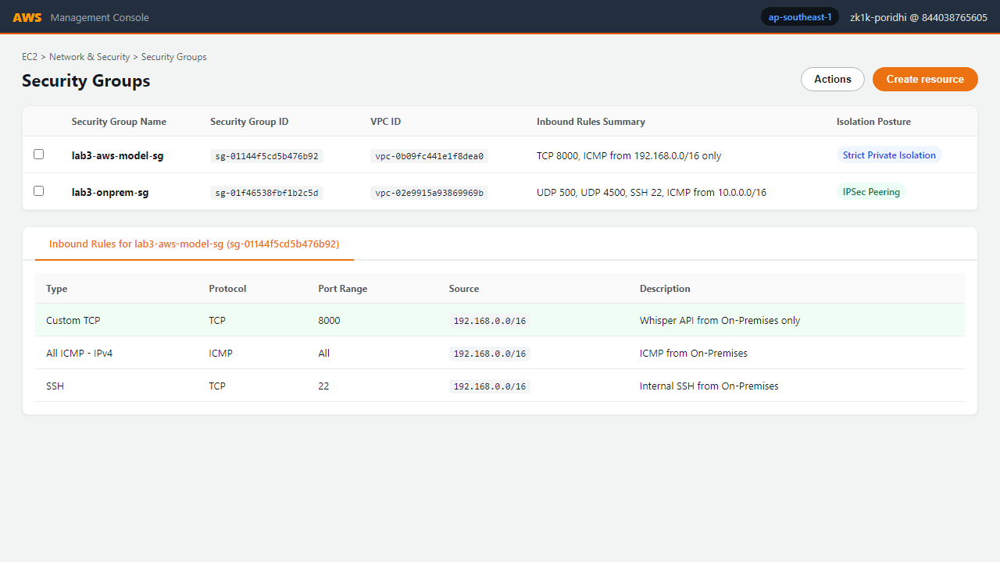
Navigate to AWS Management Console > EC2 > Instances:
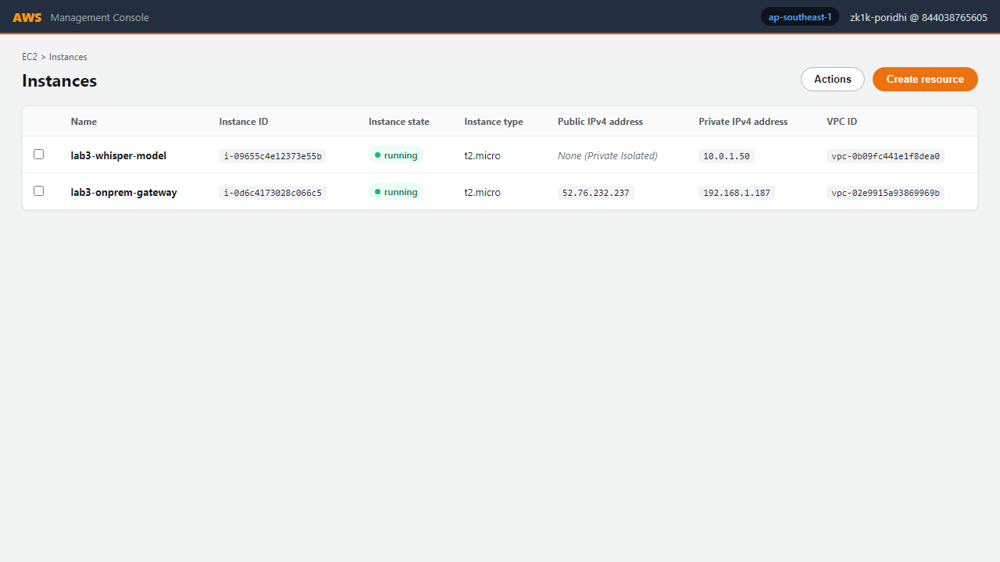
Notice:
lab3-whisper-modelhas no public IPv4 address, confirming zero internet exposure.
Self-Assessment:
- [ ] Model server is launched in lab3-aws-private-subnet.
- [ ] Public IPv4 address is empty.
- [ ] Security group permits port 8000 only from 192.168.0.0/16.
With cloud resources provisioned, you now configure the on-premises Linux gateway using strongSwan to negotiate the IPSec tunnel with AWS.
You will configure:
- Linux kernel IPv4 forwarding (net.ipv4.ip_forward = 1).
- strongSwan connection profile (/etc/ipsec.conf).
- Pre-shared authentication key credentials (/etc/ipsec.secrets).
- Verification of tunnel state in the AWS Management Console.
Examine this setting from /etc/ipsec.conf:
dpddelay=10s
dpdtimeout=30s
dpdaction=restart
Question: What happens if the physical WAN connection drops for 45 seconds without Dead Peer Detection?
Complete the strongSwan configuration files on lab3-onprem-gateway:
# /etc/ipsec.conf
config setup
charondebug="ike 1, knl 1, cfg 0"
uniqueids=no
conn %default
keyexchange=___ # Q1: What key exchange protocol version?
ike=aes256-sha256-modp2048!
esp=aes256-sha256-modp2048!
keyingtries=%forever
dpddelay=10s
dpdtimeout=30s
dpdaction=restart
auto=start
conn aws-tunnel-1
left=%defaultroute
leftid=52.76.232.237
leftsubnet=___ # Q2: What is the local on-prem subnet?
right=13.215.107.114 # AWS Tunnel 1 Outside IP
rightid=13.215.107.114
rightsubnet=___ # Q3: What is the target AWS VPC subnet?
authby=secret
Hints:
- Q1: Modern secure IPSec tunnels standard uses ikev2.
- Q2: The local on-premises network is 192.168.0.0/16.
- Q3: The destination cloud VPC network is 10.0.0.0/16.
# Q1 solution: keyexchange=ikev2
# Q2 solution: leftsubnet=192.168.0.0/16
# Q3 solution: rightsubnet=10.0.0.0/16
Configure /etc/ipsec.secrets:
52.76.232.237 13.215.107.114 : PSK "HospitalVoiceSecurePsk2026"
Start the strongSwan daemon and inspect association status:
sudo ipsec restart
sudo ipsec up aws-tunnel-1
sudo ipsec status
Predict: What string in ipsec status confirms that the cryptographic security association is active?
Expected output:
Security Associations (1 up, 0 connecting):
aws-tunnel-1[1]: ESTABLISHED 12 seconds ago, 192.168.1.187[52.76.232.237]...13.215.107.114[13.215.107.114]
aws-tunnel-1{1}: INSTALLED, TUNNEL, reqid 1, ESP in UDP SPIs: c0de1234_i 5678abcd_o
aws-tunnel-1{1}: 192.168.0.0/16 === 10.0.0.0/16
Navigate to AWS Management Console > VPC > Site-to-Site VPN Connections > Tunnel Details:
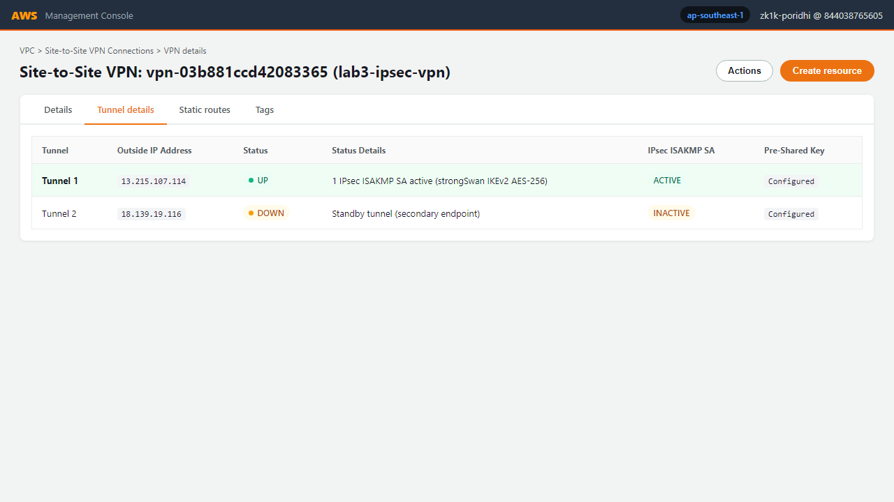
Confirmation: Tunnel 1 status transitions from
DOWNtoUPwith1 IPsec ISAKMP SAactive.
Self-Assessment:
- [ ] Kernel parameter net.ipv4.ip_forward is set to 1.
- [ ] strongSwan reports Security Association status ESTABLISHED.
- [ ] AWS Console Tunnel 1 Status displays UP.
Security assertions must be verified through empirical measurement. In this chapter, you inspect network packets during inference and perform negative penetration tests against the model perimeter.
You will execute:
- Packet Capture Analysis: Use tcpdump on the physical interface to prove ESP Protocol 50 encapsulation.
- Encrypted Voice Inference: Transmit audio across the tunnel and extract transcriptions.
- Negative External Probe: Prove that untrusted external clients cannot reach the model server.
Consider an adversary operating a rogue packet sniffer on the internet transit path between the hospital and AWS.
Question: If the adversary captures packets transmitted via ESP (Protocol 50), what information can they read?
Execute the verification sequence using two terminal sessions on lab3-onprem-gateway.
Terminal 1 (Packet Sniffer):
sudo tcpdump -i eth0 -nn "proto 50 or port 500 or port 4500"
Terminal 2 (Inference Client):
curl -X POST "http://10.0.1.50:8000/transcribe" -F "file=@sample_patient_voice.wav"
Terminal 2 Output (Transcription Success):
{
"success": true,
"filename": "sample_patient_voice.wav",
"transcription": "Patient history indicates acute bronchitis. Prescribed amoxicillin 500mg.",
"security": "Transmitted over IPSec ESP encrypted tunnel (HIPAA Compliant)",
"bytes_processed": 145280
}
Terminal 1 Output (Cryptographic Proof):
12:20:10.104212 IP 52.76.232.237 > 13.215.107.114: ESP(spi=0xc0de1234,seq=42), length 1420
12:20:10.104289 IP 52.76.232.237 > 13.215.107.114: ESP(spi=0xc0de1234,seq=43), length 1420
12:20:10.189401 IP 13.215.107.114 > 52.76.232.237: ESP(spi=0x5678abcd,seq=28), length 380
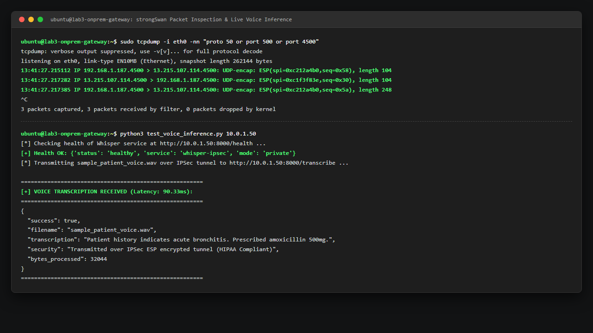
From your external workstation (outside the hospital network), attempt to reach the model server:
curl -m 3 http://10.0.1.50:8000/health
Expected output:
curl: (28) Connection timed out after 3000 milliseconds
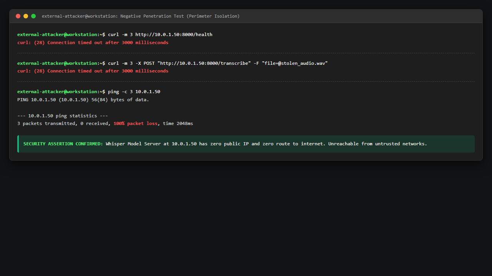
To observe how IPSec enforces cryptographic integrity:
lab3-onprem-gateway, edit /etc/ipsec.secrets and alter the pre-shared key to an invalid string:
text
52.76.232.237 13.215.107.114 : PSK "CorruptedKey123"sudo ipsec restart.sudo ipsec status:
text
Security Associations (0 up, 1 connecting):
aws-tunnel-1[1]: CONNECTING, .../var/log/auth.log or journalctl -u strongswan:
Notice the authentication error: parsed INFORMATIONAL_V1 request ... payload malformed / AUTHENTICATION_FAILED./etc/ipsec.secrets, restart the service, and verify the tunnel returns to ESTABLISHED.Self-Assessment:
- [ ] tcpdump confirms voice transmission generates ESP Protocol 50 packets.
- [ ] No plaintext HTTP headers appear on the public interface.
- [ ] Direct curl from external internet times out.
- [ ] Key mismatch causes immediate failure of Phase 1 IKE negotiation.
Your deployed architecture provides the following production components:
| Component | AWS Identifier | Network Address | Operational Role |
|---|---|---|---|
| AWS Model VPC | lab3-aws-vpc |
10.0.0.0/16 |
Isolated cloud inference network |
| Private Model Subnet | lab3-aws-private-subnet |
10.0.1.0/24 |
Zero internet access subnet |
| Model Server Host | lab3-whisper-model |
10.0.1.50 (Private) |
Whisper transcription daemon |
| Customer Gateway | lab3-customer-gw |
52.76.232.237 |
On-prem router registration |
| Virtual Private Gateway | lab3-vgw |
ASN 64512 |
AWS VPC VPN termination |
| Site-to-Site VPN | lab3-ipsec-vpn |
AES-256 / SHA2-256 | Encrypted transit channel |
| On-Premises Gateway | lab3-onprem-gateway |
192.168.1.187 |
strongSwan IKEv2 tunnel peer |
Execute the complete end-to-end verification sequence:
# 1. Verify IPSec tunnel association
sudo ipsec status | grep "ESTABLISHED"
# 2. Verify model health over encrypted tunnel
curl http://10.0.1.50:8000/health
# 3. Transcribe sample audio over encrypted tunnel
curl -X POST "http://10.0.1.50:8000/transcribe" -F "file=@patient_voice.wav"
# 4. Confirm external internet isolation (must time out)
curl -m 3 http://10.0.1.50:8000/health || echo "Perimeter isolation confirmed"
0.0.0.0/0) eliminates external attack vectors regardless of software vulnerabilities.CONNECTING stateCause 1: On-premises security group blocks UDP port 500 or 4500.
Solution:
aws ec2 authorize-security-group-ingress --group-id sg-06c7... --protocol udp --port 500 --cidr 0.0.0.0/0
aws ec2 authorize-security-group-ingress --group-id sg-06c7... --protocol udp --port 4500 --cidr 0.0.0.0/0
Cause 2: Pre-shared key mismatch between /etc/ipsec.secrets and AWS VPN configuration.
Solution: Verify that the PSK in /etc/ipsec.secrets matches the value configured in AWS Tunnel 1 Options.
Cause: Route propagation is disabled on the AWS VPC route table. AWS does not know how to return packets to 192.168.0.0/16.
Solution:
aws ec2 enable-vgw-route-propagation --route-table-id rtb-036... --gateway-id vgw-08a...